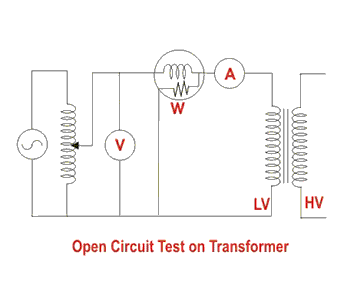
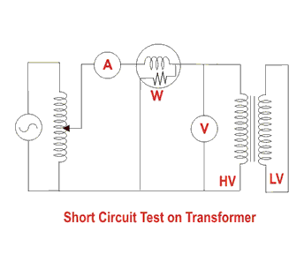

Open and Short Circuit Test on Transformer
These two tests are performed on a transformer to determine (i) equivalent circuit of transformer (ii) voltage regulation of transformer(iii) efficiency of transformer. The power required for these open circuit test and short circuit test on transformer is equal to the power loss occurring in the transformer.
Open Circuit Test on Transformer
The connection diagram for open circuit test on transformer is shown in the figure. A voltmeter, wattmeter, and an ammeter are connected in LV side of the transformer as shown. The voltage at rated frequency is applied to that LV side with the help of a variac of variable ratio auto transformer. The HV side of the transformer is kept open. Now with the help of variac, applied voltage gets slowly increased until the voltmeter gives reading equal to the rated voltage of the LV side. After reaching at rated LV side voltage, all three instruments reading (Voltmeter, Ammeter and Wattmeter readings) are recorded.

The ammeter reading gives the no load current Ie. As no load current Ie is quite small compared to rated electric current of the transformer, the voltage drops due to this electric current that can be taken as negligible.
Since, voltmeter reading V1 can be considered equal to secondary induced voltage of the transformer, the input power during test is indicated by watt-meter reading. As the transformer is open circuited, there is no output, hence the input power here consists of core losses in transformer and copper loss in transformer during no load condition. But as said earlier, the no load current in the transformer is quite small compared to full load current, so copper loss due to the small no load current can be neglected. Hence, the wattmeter reading can be taken as equal to core losses in transformer. Let us consider wattmeter reading is Po.
Where Rm is shunt branch resistance of transformer.
If, Zm is shunt branch impedance of transformer.
Therefore, if shunt branch reactance of transformer is Xm,
These values are referred to the LV side of transformer as because the test is conduced on LV side of transformer. These values could easily be referred to HV side by multiplying these values with square of transformation ratio.
Therefore it is seen that the open circuit test on transformer is used to determine core losses in transformer and parameters of shunt branch of the equivalent circuit of transformer.
Short Circuit Test on Transformer
The connection diagram for short circuit test on transformer is shown in the figure. A voltmeter, wattmeter, and an ammeter are connected in HV side of the transformer as shown. The voltage at rated frequency is applied to that HV side with the help of a variac of variable ratio auto transformer.
The LV side of the transformer is short circuited. Now with the help of variac applied voltage is slowly increased until the ammeter gives reading equal to the rated electric current of the HV side. After reaching at rated electric current of HV side, all three instruments reading (Voltmeter, Ammeter and Watt-meter readings) are recorded. The ammeter reading gives the primary equivalent of full load current IL. As the voltage applied for full load current in short circuit test on transformer is quite small compared to the rated primary voltage of the transformer, the core losses in transformer can be taken as negligible here.

Let’s say, voltmeter reading is Vsc. The input power during test is indicated by watt-meter reading. As the transformer is short circuited, there is no output; hence the input power here consists of copper losses in transformer. Since, the applied voltage Vsc is short circuit voltage in the transformer and hence it is quite small compared to rated voltage, so core loss due to the small applied voltage can be neglected. Hence the wattmeter reading can be taken as equal to copper losses in transformer. Let us consider wattmeter reading is Psc.
Where Re is equivalent resistance of transformer.
If, Ze is equivalent impedance of transformer.
Therefore, if equivalent reactance of transformer is Xe
These values are referred to the HV side of transformer as because the test is conduced on HV side of transformer. These values could easily be referred to LV side by dividing these values with square of transformation ratio.
Therefore it is seen that the short circuit test on transformer is used to determine copper loss in transformer at full load and parameters of approximate equivalent circuit of transformer.
 by
by